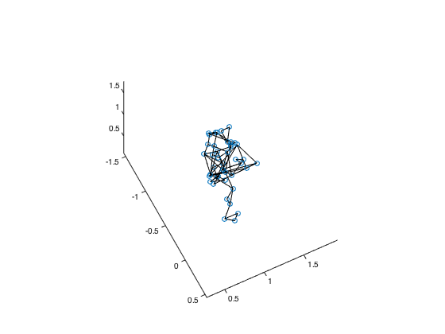

Contents
PATH
cd /Users/florianbuchheit/Documents/PRO/ALIAGE/EMCT-master/0_DEMO %ligne rajoutee pour etre sur d'etre bien dans le bon dossier ; ? adapter en fonction de votre r?pertoire currentDir = pwd; %% Access the folder DEMO cd ..; % Change to the EMC Toolbox directory toolboxDir = pwd;
TOOLBOX
Add path for toolbox
addpath(genpath(toolboxDir))
----------------
LOAD ----------------
Load a file - 1 Body
cfg = []; % Empty cfg % Classification cfg.classificationFlag = true; cfg.classificationType = 'prefix'; cfg.classInfo = {'Subject','Emotion','Expressivity','Track'}; cfg.classPrefixPosition = {1:2,4:5,7:8,10:11}; % Give the range where the prefix is positioned within the filename cfg.classListPrefix = {{'01','02'},... {'fo','jo','no'},... {'pr','dp'},... {'01','02'}}; % List of possible prefixes cfg.classListValue = {{'01','02'},... {'force','joy','nostalgia'},... {'projected','deadpan'},... {'01','02'}}; % Categorisation number tsvFile = emcLoad([toolboxDir, filesep, '1_DATA', filesep, 'Djembe', filesep, '01_fo_dp_01.tsv'],cfg); %get the tsv file corresponding to what we need to analyse %test %tsvFile = emcLoad([toolboxDir, filesep, '1_DATA', filesep, 'Djembe', filesep, '02_jo_pr_01.tsv'],cfg); %get the tsv file corresponding to what we need to analyse %specification of the posssible connections between the analysed points cfg.connectionMatrix = [1,2;1,3;1,4;1,27;1,6;2,3;2,4;2,33;2,6;3,4;3,7;3,27;4,8;4,33;5,7;5,8;5,13;5,20;6,13;6,20;7,12;8,19;9,10;9,11;10,11;12,13;13,14;13,15;14,15;14,17;15,17;16,17;16,18;17,18;19,20;20,21;20,22;21,22;21,24;22,24;23,24;23,25;24,25;26,27;26,29;27,29;28,29;28,30;28,31;30,31;32,33;32,35;33,35;34,35;34,36;34,37;36,37;38,39;39,40;38,40;38,41;38,42;39,41;39,42;40,41;40,42]; %cfg.connectionMatrix = [1,2]; emcPlotBody(tsvFile, cfg)%on affiche les points
INFO: fillGapFlag set up to TRUE INFO: Absolute value not stored INFO: All markers will be kept [PLOT] 01_fo_dp_01.tsv - frame: 3502
----------------
EXPLORATORY PLOT ----------------
Plot timeseries
cfg.plotMarkerList = {'Body:LWristIn';'Body:RWristIn'};
cfg.displayUnit = 's';
emcPlotMarker(tsvFile, cfg)
[PLOT] 01_fo_dp_01.tsv - Compare Markers
Plot quiver
cfg.plotBodyFlag = true; emcPlotQuiver(tsvFile, cfg)
INFO: Since no cfg.step was set up, arbirarily defined to 20. [PLOT] 01_fo_dp_01.tsv - step: 20
---------------
PREPROCESSING ---------------
Preprocessing
cfg.preprocessingType = {'rotation frontal'};
cfg.markerFrontalList = {'Body:LShoulderTop';'Body:RShoulderTop'};
cfg.rotationAngleValue = 180;
cfg.rotationAngleAxis = [0 0 1];
tsvFile = emcPreprocessing( tsvFile,cfg);
emcPlotBody(tsvFile, cfg)
[PREPROCESSING] rotation frontal [PLOT] 01_fo_dp_01.tsv - frame: 3529
--------------------
PROCESSING Features --------------------
Kinetic Energy
cfg.display = true; cfg.displayUnit = 's'; cfg.m2jpar.type = 'm2jpar'; cfg.m2jpar.nMarkers = 20; cfg.m2jpar.markerNum = {[1,2,3,4];[1,3];[2,4];[5,6,12,19];[7,8,6,1,2,3,4];[9,10,11];13;[13,14,15];[14,15,17];[16,17,18];20;[20,21,22];[21,22,24];[23,24,25];[27];[26,29,28];[28,30,31];[33];[32,35,34];[34,36,37]}; cfg.m2jpar.markerName = {'BASE';'LPELVIS';'RPELVIS';'THORAX';'ABDOMEN';'HEAD';'LSHOULDER';'LUARM';'LFARM';'LHAND';'RSHOULDER';'RUARM';'RFARM';'RHAND';'LTHIGH';'LLEG';'LFOOT';'RTHIGH';'RLEG';'RFOOT'}; cfg.j2spar.type = 'j2spar'; cfg.j2spar.rootMarker = 1; cfg.j2spar.frontalPlane = [5 9 1]; cfg.j2spar.parent = [0,1,1,5,3,4,4,7,8,9,4,11,12,13,3,15,16,3,18,19]; cfg.j2spar.segmentName = cfg.m2jpar.markerName; cfg.segmidx = [0,14,14,12,13,10,11,3,2,1,11,3,2,1,8,7,6,8,7,6]; cfg.mcspar = mcgetsegmpar('Dempster', cfg.segmidx); cfg.paramComputation = 'mean'; tsvFile = emcKineticEnergy(tsvFile, cfg);
cfg.featMarker was not setup. Default: all markers [PROCESSING] Kinetic Energy
Angles
cfg.transformName = 'Body:SHOULDERmid'; cfg.transformMarker = {'Body:LShoulderTop', 'Body:RShoulderTop'}; [ tsvFile ] = emcMidpoint( tsvFile, cfg); cfg.transformName = 'Body:PELVISbar'; cfg.transformMarker = {'Body:WaistLFront';'Body:WaistRFront';'Body:WaistLBack';'Body:WaistRBack'}; [ tsvFile ] = emcBaricenter( tsvFile, cfg); cfg.transformName = 'Body:PELVISmid'; cfg.transformMarker = {'Body:WaistLFront', 'Body:WaistRFront'}; [ tsvFile ] = emcMidpoint( tsvFile, cfg); cfg.angleDim = 2; cfg.angleName = 'shoulderhead'; cfg.angleVector = {{'Body:SHOULDERmid','Body:Chest'},{'Body:HeadTop','Body:HeadFront'}}; tsvFile = emcAngleVector(tsvFile, cfg); cfg.angleName = 'shoulderpelvis'; cfg.angleVector = {{'Body:SHOULDERmid','Body:Chest'},{'Body:PELVISbar','Body:PELVISmid'}}; tsvFile = emcAngleVector(tsvFile, cfg); cfg.angleName = 'headpelvis'; cfg.angleVector = {{'Body:HeadTop','Body:HeadFront'},{'Body:PELVISbar','Body:PELVISmid'}}; tsvFile = emcAngleVector(tsvFile, cfg); cfg.lineVector = cfg.angleVector; emcPlotBody(tsvFile, cfg) % Threshold shoulderheadThreshold = quantile(tsvFile.processing.shoulderhead,0.75); tsvFile.processing.shoulderheadThreshold = mean(tsvFile.processing.shoulderhead(tsvFile.processing.shoulderhead > shoulderheadThreshold)); shoulderpelvisThreshold = quantile(tsvFile.processing.shoulderpelvis,0.75); tsvFile.processing.shoulderpelvisThreshold = mean(tsvFile.processing.shoulderpelvis(tsvFile.processing.shoulderpelvis > shoulderpelvisThreshold)); headpelvisThreshold = quantile(tsvFile.processing.headpelvis,0.75); tsvFile.processing.headpelvisThreshold = mean(tsvFile.processing.headpelvis(tsvFile.processing.headpelvis > headpelvisThreshold));
[PLOT] 01_fo_dp_01.tsv - frame: 577
Speed/Acceleration
cfg.euclidianFlag = true;
cfg.derivParam = 'norm';
cfg.deriv = 1;
tsvFile = emcDerivative(tsvFile,cfg);
cfg.deriv = 2;
tsvFile = emcDerivative(tsvFile,cfg);
cfg.featMarker was not setup. Default: all markers [PROCESSING] Derivative cfg.featMarker was not setup. Default: all markers [PROCESSING] Derivative
Sample entropy
cfg.featureName = 'speed';
tsvFile = emcSampleEntropy( tsvFile, cfg);
[PROCESSING] Sample Entropy
Convexhull
tsvFile = emcConvexhull(tsvFile,cfg);
cfg.featMarker was not setup. Default: all markers [PROCESSING] Convexhull
Cumulative Distance
tsvFile = emcCumulativeDistance( tsvFile, cfg);
cfg.featMarker was not setup. Default: all markers [PROCESSING] Cumulative Distance
Density
tsvFile = emcDensity( tsvFile, cfg);
cfg.featMarker was not setup. Default: all markers [PROCESSING] Density
Hands Speed
cfg.handsMarkers = {'Body:LWristIn';'Body:RWristIn'};
tsvFile = emcHandsSpeed(tsvFile,cfg);
[PROCESSING] Hands Speed [PROCESSING] Derivative
Distance
cfg.featDistMarker = {'Body:LWristIn';'Body:RWristIn'};
tsvFile = emcDistance(tsvFile,cfg);
[PROCESSING] Distance between markers
Sync
cfg.syncType = 'intra'; cfg.dataType = 'marker';% 'marker'; cfg.dataList = {'LELB';'RELB';'LWRB';'RWRB'}; tsvFile = emcEventSync( tsvFile, cfg );
cfg.colNames was not setup. Default: Numeric [PROCESSING] Event Sync
--------------------
SAVE --------------------
GRAPHS
emcSaveGraph([toolboxDir, filesep, '9_Output']) close all
[SAVE] Saving all available graphs into PDFs Saving../Users/florianbuchheit/Documents/PRO/ALIAGE/EMCT-master/9_Output/01_fo_dp_01.tsv - Delay__19-Nov-2019.fig Saving../Users/florianbuchheit/Documents/PRO/ALIAGE/EMCT-master/9_Output/01_fo_dp_01.tsv - Sync__19-Nov-2019.fig Saving../Users/florianbuchheit/Documents/PRO/ALIAGE/EMCT-master/9_Output/01_fo_dp_01.tsv - Distance between markers__19-Nov-2019.fig Saving../Users/florianbuchheit/Documents/PRO/ALIAGE/EMCT-master/9_Output/01_fo_dp_01.tsv - speed__19-Nov-2019.fig Saving../Users/florianbuchheit/Documents/PRO/ALIAGE/EMCT-master/9_Output/01_fo_dp_01.tsv - Density__19-Nov-2019.fig Saving../Users/florianbuchheit/Documents/PRO/ALIAGE/EMCT-master/9_Output/01_fo_dp_01.tsv - Cumulative Distance__19-Nov-2019.fig Saving../Users/florianbuchheit/Documents/PRO/ALIAGE/EMCT-master/9_Output/01_fo_dp_01.tsv - Convexhull - TF=3549__19-Nov-2019.fig Saving../Users/florianbuchheit/Documents/PRO/ALIAGE/EMCT-master/9_Output/01_fo_dp_01.tsv - Convexhull__19-Nov-2019.fig Saving../Users/florianbuchheit/Documents/PRO/ALIAGE/EMCT-master/9_Output/01_fo_dp_01.tsv - speed - Sample Entropy__19-Nov-2019.fig Saving../Users/florianbuchheit/Documents/PRO/ALIAGE/EMCT-master/9_Output/01_fo_dp_01.tsv - acceleration__19-Nov-2019.fig Saving../Users/florianbuchheit/Documents/PRO/ALIAGE/EMCT-master/9_Output/01_fo_dp_01.tsv - speed__19-Nov-2019.fig Saving../Users/florianbuchheit/Documents/PRO/ALIAGE/EMCT-master/9_Output/01_fo_dp_01.tsv -- TF = 577__19-Nov-2019.fig Saving../Users/florianbuchheit/Documents/PRO/ALIAGE/EMCT-master/9_Output/01_fo_dp_01.tsv - Angle - headpelvis__19-Nov-2019.fig Saving../Users/florianbuchheit/Documents/PRO/ALIAGE/EMCT-master/9_Output/01_fo_dp_01.tsv - Angle - shoulderpelvis__19-Nov-2019.fig Saving../Users/florianbuchheit/Documents/PRO/ALIAGE/EMCT-master/9_Output/01_fo_dp_01.tsv - Angle - shoulderhead__19-Nov-2019.fig Saving../Users/florianbuchheit/Documents/PRO/ALIAGE/EMCT-master/9_Output/01_fo_dp_01.tsv - Kinetic Energy__19-Nov-2019.fig Saving../Users/florianbuchheit/Documents/PRO/ALIAGE/EMCT-master/9_Output/01_fo_dp_01.tsv -- TF = 3529__19-Nov-2019.fig Saving../Users/florianbuchheit/Documents/PRO/ALIAGE/EMCT-master/9_Output/01_fo_dp_01.tsv - step: 20__19-Nov-2019.fig Saving../Users/florianbuchheit/Documents/PRO/ALIAGE/EMCT-master/9_Output/01_fo_dp_01.tsv -- Compare Markers__19-Nov-2019.fig Saving../Users/florianbuchheit/Documents/PRO/ALIAGE/EMCT-master/9_Output/01_fo_dp_01.tsv -- TF = 3502__19-Nov-2019.fig Saving../Users/florianbuchheit/Documents/PRO/ALIAGE/EMCT-master/9_Output/Figure__19-Nov-2019.fig
CSV FILES
cfg.outputDir = [toolboxDir, filesep, '9_Output']; cfg.saveSingleFeatureFlag = true; cfg.saveSummaryFeatureFlag = true; cfg.summaryType = {'SUM','AVG','MEDIAN','MODE','STD','TRIMMEAN'}; % Save features cfg.filename = 'Summary'; emcSaveFeature(tsvFile,cfg)
[WARNING] No summary plane defined. Default: {}.
[WARNING] concatenateAll set to true. Default: {}.
[WARNING] No saveTrimmeanParam defined. Default: 50.
[SAVE] Saving features for - 01_fo_dp_01.tsv
Writing kinEnerg
Writing shoulderhead
Writing shoulderpelvis
Writing headpelvis
Writing shoulderheadThreshold
Writing shoulderpelvisThreshold
Writing headpelvisThreshold
Writing speed
Writing acceleration
Writing sampentrop
Writing convexhull
Writing cumuldist
Writing density
Writing distance
Writing sync
Writing delay
Writing Summary SUM
Writing Summary AVG
Writing Summary MEDIAN
Writing Summary MODE
Writing Summary STD
Writing Summary TRIMMEAN